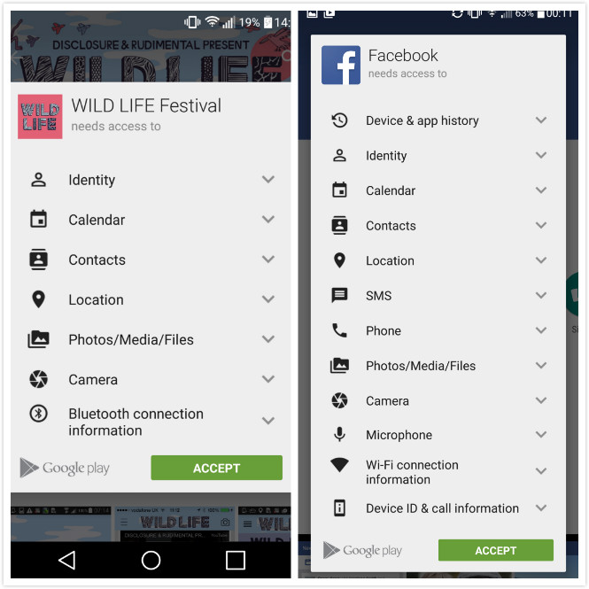
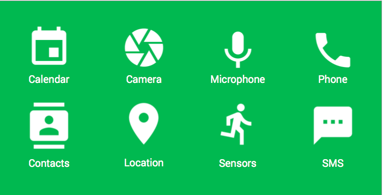
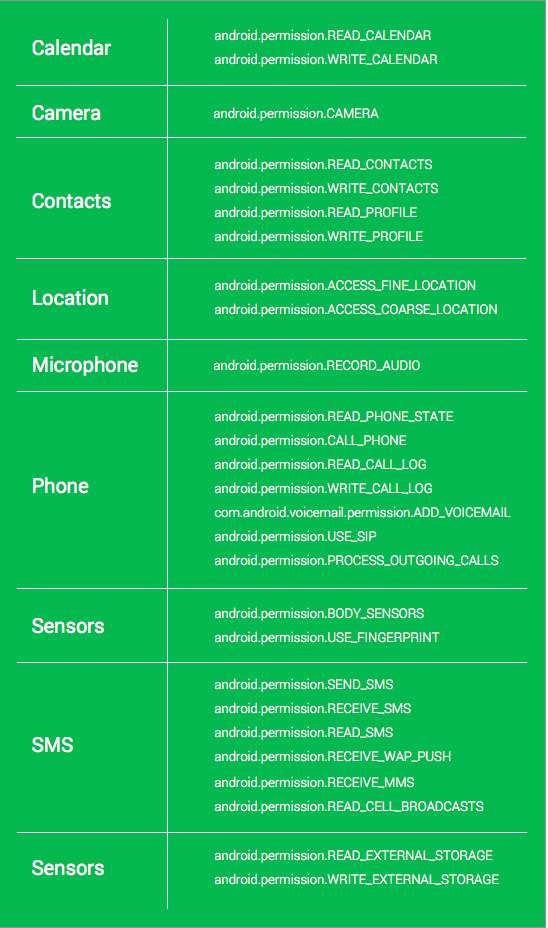
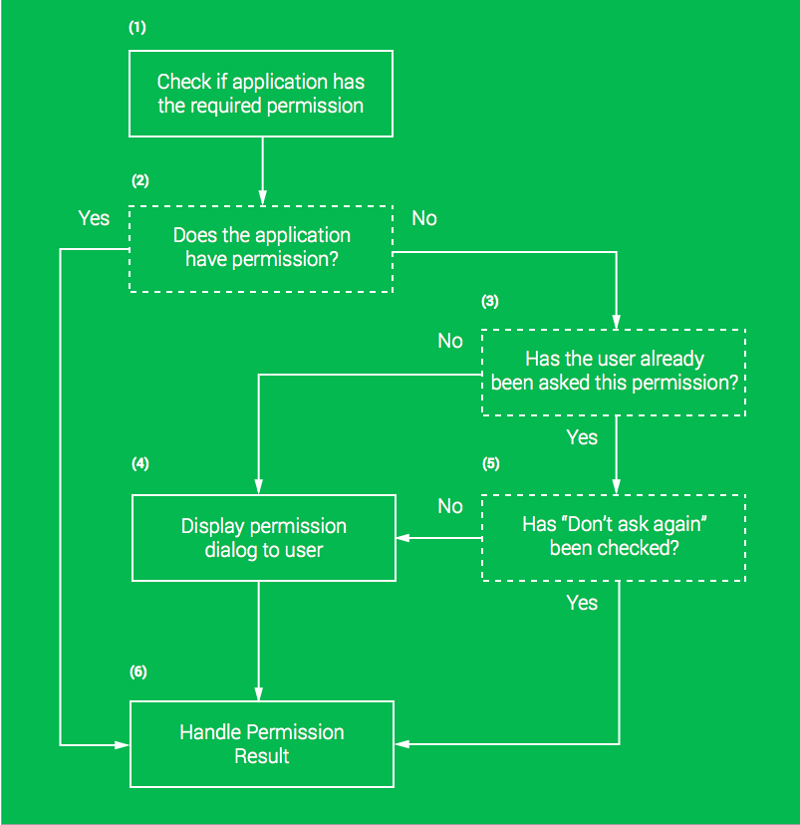
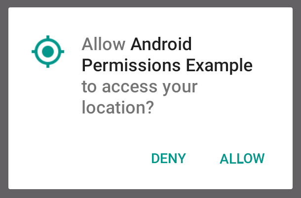
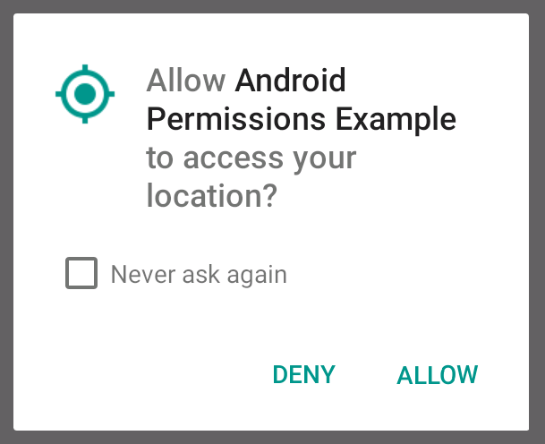
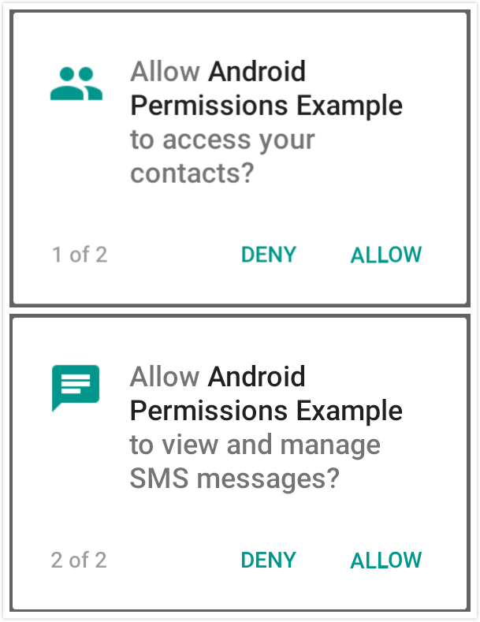
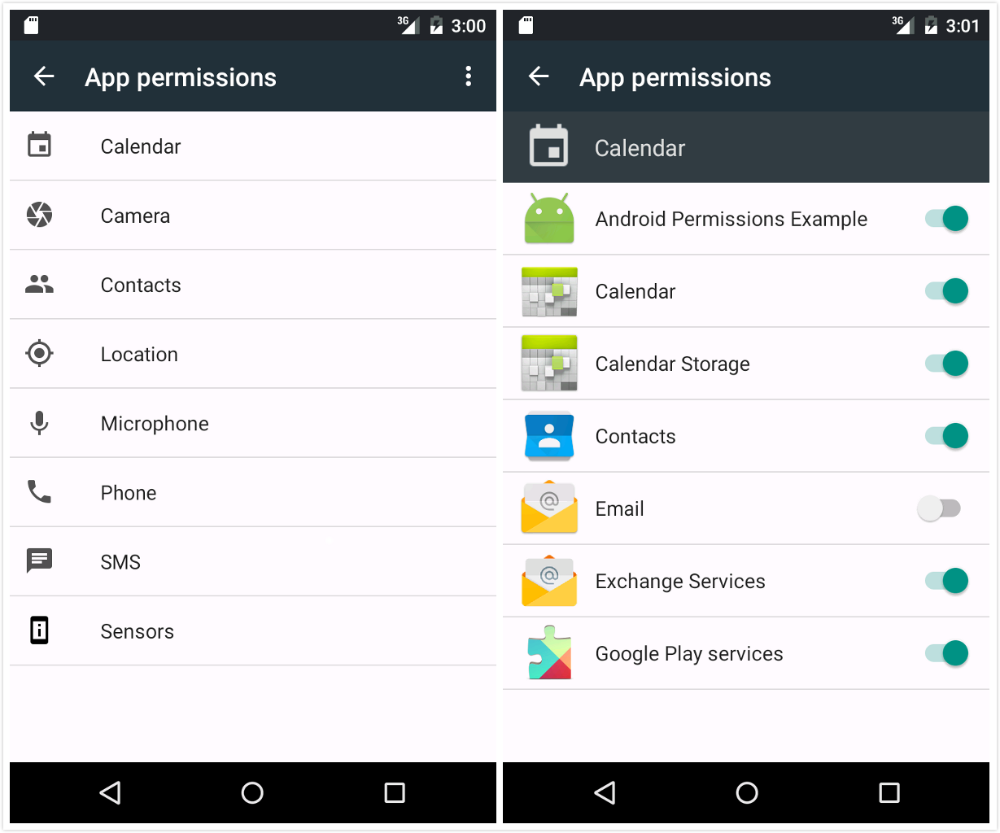
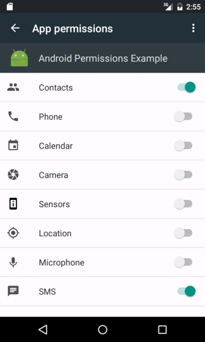

随着Android M 的发布，安卓权限机制无论是对用户呈现方式还是对开发者都发生了变化。本篇文章我将带领大家探索这些变化，探索它是如何提高用户体验，对于开发者又是如何实现这种新权限机制的。
随着2015谷歌IO大会的落幕，我们之前也了解到这次大会发布了几项重大技术，包括之前我们讲到的Android Design Support Library。除此之外另一项重要发布便是新安卓权限机制了，该权限机制也应用在Android M版本上了。ribot（译者注：作者就职公司）也正准备将产品线更新到这种新权限机制，所以就有了本篇博文的发布。
@Joe Birch
原文地址：https://labs.ribot.co.uk/exploring-the-new-android-permissions-model-ba1d5d6c0610#.926rafqpz
源码地址：https://github.com/IceDcap/MarshmallowPermissionDemo
在做安卓应用开发时，安卓权限机制总是一个重要的领域需被考虑。当前，用户是可以意识到安卓中的权限，但是没有对权限实际的控制。更重要的是，开发者会在现有基础上添加新权限产生分歧，在软件更新的时候会引起阻碍也会影响更新的统计。
在现有的权限机制中，用户必须在应用安装时就全部授予应用所需的所有权限，否则应用安装不成功。这就需要用户在使用该应用之前就很信任该应用不会造成用户隐私泄露或者其他由于权限而造成的损失。对于大部分用户来说选择信任该应用将成为是否安装该应用最初门槛。
就我个人而言，我见识了在各个平台上安装安卓应用。例如，我最近在参加一个音乐节的时候，官方提供了一款App，该App主要介绍主办方的一些信息以及表演曲目和嘉宾。我认为这个很不错就立即登陆Google Play下载这款App，当点击安装按钮的时候，弹出权限列表如下图左侧，这时我懵逼了，为什么这个应用（它的功能只是展示歌手、曲目以及登台时间等信息）要请求我的联系人信息、位置信息、还有我的文件系统等权限呢？好吧，拜拜了，你已经无缘入驻我手机了。其实，这种经历不是第一次了。（译者：貌似我大天朝的App请求权限更严重，我朝人民从不关注的😊）
很多应用请求的权限有些吓人
好多情况下，我们用户感觉是被强制安装的。就拿FaceBook来说，很多用户使用FaceBook,同时FaceBook请求的权限也是巨多。不过FaceBook已经深得人心取得了用户的信任，所以很多用户在安装FaceBook都会忽略这么长一串的权限。
有时候一些忠实的用户只想使用FaceBook中的主要功能，列表中的大部分权限用户是不想授予应用使用的。
随着Android-M的发布，这种权限列表大大减少。它们随着用户的使用会实时请求用户权限。
例如，用户在应用中使用照相功能时，系统会请求Camera权限。这种方式下，如果用户从来没有在应用内使用该权限，那么它们不需要在应用安装时就去授予该权限。
Permission Group
安卓中权限分为八个组别
随着Android-M的发布，权限现在被一组组归类，每一类就是请求用户所要授权的权限请求。例如，如果你请求访问READ_CALENDAR权限，那么系统将提示用户授予Calendar权限。
在每一类下都包括很多具体的权限，如下表所示：
每一类下都包括很多具体的权限
上表中你可能会注意到，已经没有internet权限了。这是一个很好的决定！不再请求该权限也就意味着你在使用上网功能时不必通知用户来授予该权限了。取消这个权限也是由于现在的权限机制被设计为PROTECTION_NORMAL，这会自动为应用授予在AndroidManifest中声明的权限。
Runtime Permissions
现在在Google Play上安装应用也是发生了些许变化。在之前，点击安装按钮时不会实际去安装这个应用，而首先需要接受该应用所请求的权限列表。现在则不会列出权限列表，直接安装应用。所以当点击安装时就已经真的安装应用了，不会在让用户接受权限列表中所要授予的权限。
在应用运行时，一旦使用某个功能需要某些权限时就会实时请求该权限。此时，你需要检查系统是否已经为应用授予了该权限。如下图所示，在使用该权限前，系统会经过一系列的检查操作。
运行时权限请求过程
- 从流程1开始，我们对操作检查是否需要请求权限。
- 接下来，2中系统检查该权限是否已经授予了，这一步需要调用checkSelfPermission()方法。
- 如果我们已经授予了这个权限就可以直接跳到第6步去使用该权限进行相应的操作。否则系统会进入到第3步检查是否用户已经被询问并且授予了这个权限。如果该权限之前从未被授予过，那么这时就会弹出一个标准的对话框并且询问用户是否授予该权限（第4步）。
- 否则的话，如果用户之前弹出了对话框但是用户并没有授予这个权限（第5步），这时候仍然会弹出这个标准的对话框再一次询问用户是否授予这个权限。这次会带有一个选择框一般是一个标记用来指示下次是否还要弹出该对话框。
- 无论如何，该选择框的标记如果在这一步中被设置，那么通过调用onRequestPermissionsResult()方法（第6步）和操作该权限的代码都会返回最终的结果。
当使用一个简单的对话框来请求一个权限时，会提示用户ALLOW还是DENY该权限：
权限请求的标准对话框
上图就是用户首次请求位置权限的对话框。如果你接受该请求，那么就会为应用授予该权限并且使用该权限进行相应的操作。否则的话，如上述流程的解释一样，拒绝该权限会导致两种不同的结果。
用户第一次拒绝要申请的权限后，对话框消失并且采用其他的方式来弥补无法使用该权限带来的结果。例如，为了向用户显示联系人列表需要请求访问Contracts权限，如果用户拒绝该权限，就会使用一个错误标志展示在用户列表中。这样要明确拒绝该权限导致的结果，为提供用户体验做好准备。
注意：首次拒绝权限请求不会带来任何影响，所以不必向用户提供双重请求提示。
如果需要的话，你可以使用shouldShowRequestPermissionRationale()方法来检查应用之前是否已经请求了该权限并且已经被拒绝了。这样可以在请求权限之前就将错误信息显示在屏幕中。
在第一次权限请求被拒绝后，你需要再次请求该权限。这一次对话框会多出一个选择框，“Never ask again”的标记可以控制该对话框不会再弹出。
再次请求权限对话框中多了一个选择框
如果用户勾选了这个选择框,那么在该应用中就不会再请求该权限了。这里没有什么可以做的，所以如果该权限对你应用操作至关重要，那么在第一次请求的时候你就要弄清楚为什么要拒绝该权限，要给自己一个信服的理由去拒绝。
让用户清楚应用权限是非常重要的，有一个方法可以让用户先入为主，那就在欢迎界面介绍该应用,概述该应用程序的功能。这样对提高用户对应用权限的认知是非常有帮助的，同时也希望增加用户对应用的信任，在请求相应的权限时，用户可以点击允许按钮。
有时在同一请求中会有多个权限。在大多数情况下这是没必要的,不应该这样使用,除非它非常重要，不到万不得已才这样使用。一个好的用例就是在应用程序启动时很多功能需要不同的权限给予支持。例如，短信应用需要访问联系人权限来保证获得联系人信息当然更重的是需要SMS权限，在该应用启动时 必须获得这两个权限才能启动。
多权限请求
上图对话框看起来除左下角的角标外其他都和单权限请求的对话框差不多。角标显示权限的总个数，这里要注意，如果请求太多的权限会引起用户的反感甚至直接卸载应用。
当然在使用Android-M引入的新权限机制前要考虑版本兼容性，所以要使用Build.VERSION.CODENAME判断当前安卓版本，如果是23及以上就可以使用新权限机制。
请求单一权限
为了请求单一权限，我们可以使用checkSelfPermission()方法来检查应用是否已经授予了该权限。如下面代码所示，如果我们没有授予该权限，那么就需要使用requestPermissions()方法来请求，将要申请的权限以数组类型作为参数传入。
|
|
当调用requestPermissions()方法后，系统会弹出权限请求对话框。一旦用户对对话框做出回应onRequestPermissionsResult()方法就会被调用，在该方法内可以检查用户做出的授予或者拒绝操作。
|
|
在上面代码中，通过requestCode 检索到grantResults数组中的权限。如果此权限已被授予就可以使用该权限进行相应的操作。
另一方面，如果我们拒绝授予此权限，那么我们需要显示一些信息来告知用户无法继续操作。
请求多个权限
在多权限请求中，我们要做到事情和但权限请求稍有不同。在下面的例子中，我是先检查要申请的权限是否已经或者其中有已经被授予的情况，如果没有，我把没有授予的权限加到一个权限列表中。接着我将这个列表以参数的形式传递给requestPermissions()方法。
|
|
在Android M上声明权限
对于只希望在Android-M设备使用该权限机制的应用,可以在Manifest文件中单独为Android M声明：
|
|
这种形式的定义在M版本以下和普通定义的权限一样而不是只在M版本的设备上会进行权限检查。所以当你使用该方法进行更新应用时不必担心版本兼容性问题。这样的权限只会在M版本的设备上可用在其他情况下是不会被请求的。
在设置中控制权限
在设置中用户可以看到一个应用权限的授予情况并且是可以改变授予状态的。如下图所示，所有权限以分组形式展示在用户面前（左侧），选择一个权限类，进去可以看到使用到该权限的所有应用（右侧）不管该应用是否已经授予了此权限，只要在manifest中声明了此权限都会列在该类权限下。
设置中的权限信息
用户也可以直接进到某一应用中查看该应用所要请求的权限。

无论使用哪一个种方式查看权限列表，都可以通过toggle按钮来控制该权限的授予状态。所以通过设置中的权限查看方法也能判断流氓软件每次请求权限带来的隐患。
如果一个权限在之前已经被授予，并且此时在设置选项中关闭了该权限，那么在使用该权限的时候就会再次进行检查并且弹出带有“Don’t Ask Again” 的对话框。
你真的需要权限吗？
记住在一些功能上可以是用Intent请求框架，而不需要请求权限亲自去调用操作。这样不用显示权限请求对话框可以大大提升用户体验。
- ACTION_INSERT 只要满足需求该action就可以替换一组权限。设置所需的MIME Type和Intent Extras来插入日历事件或联系人。这样就不必请求日历和联系人的权限。
- ACTION_IMAGE_CAPTURE 如果你的应用只是简单的拍张照片（或者拍个视频ACTION_VIDEO_CAPTURE） 并且返回结果，那么该Action就非常有用。
- ACTION_PICK 该Action可以从联系人中选择一个联系人,并选择特定的数据（email, phone number, address），当在该应用中使用这个action时会授予一个临时的READ_CONTACTS权限用来读取联系人信息。
- ACTION_VIEW 与ACTION_PICK共同使用时,此操作可用于查看所选的详细的联系人URI而不需要任何权限的授予。这个Action也可以通过在一个有效的定位目的数据来启动一个地图Intent。
- ACTION_EDIT 如果与ACTION_PICK一起使用,返回的联系人信息中可以使用URI来编辑联系人的详细信息。
- ACTION_DIAL 这个Action可以用来打开一个拨号器或者已经指定好电话号码的拨号界面。虽然它需要用户按下呼叫按钮(见ACTION_CALL),但它不需要使用任何相关的权限。
- ACTION_SENDTO 这个Action可以用来组成一个SMS消息发送到特定的电话号码上。而不用授予权限的方式来发送SMS消息。(参见:ACTION_SEND ACTION_SEND_MULTIPLE)
最佳实践
实现这个新权限机制有很多经验方法,无论请求什么权限时，你都应该按照顺序来确保使你的应用程序是流畅的高用户体验的。
- 帮助用户理解为什么你会请求某些权限，在应用启动时一定要让用户清楚所需要的权限。
- 确保当应用需要时才去请求相应权限。要让用户知道在他的操作下请求此权限是有必要的，例如，当用户使用应用进行拍照操作时会请求Camera权限是有必要的。
- 在之前的讨论中，我们知道要避免多个权限同时请求，除非在应用启动时不得已要请求多个权限的情况。
- 在授予相应的权限后一定要对用户有一个反馈。例如，当进入地图导航界面时，请求位置权限，一旦用户授予该权限，应用界面就可以获取实时位置的信息反馈给用户。
- 如果可以使用Intent能够解决的问题那么就不要使用权限机制。在应用中保持权限机制的最少使用，这样也可大大提高用户体验。
总结
到这里就结束了，在使用新权限机制时一定要保证用户体验，并且按照最佳实践给出的建议进行开发。不要忘记对这些新的权限方法进行测试，包括手动测试和自动测试。